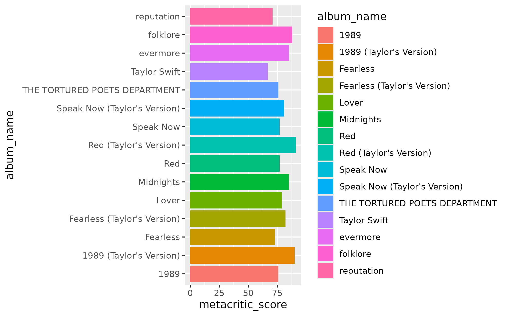

A convenience wrapper for comparing albums with color. In contrast to
scale_fill_taylor_d() and scale_colour_taylor_d(),
scale_fill_albums() and scale_colour_albums() use a single palette, with
one color per album. Specifically, the album_compare palette is used to
apply a color associated with each album.
scale_fill_albums( ..., aesthetics = "fill", breaks = waiver(), limits = force, na.value = NA ) scale_colour_albums( ..., aesthetics = "colour", breaks = waiver(), limits = force, na.value = NA ) scale_color_albums( ..., aesthetics = "colour", breaks = waiver(), limits = force, na.value = NA )
Arguments
| ... | Other arguments to be passed to |
|---|---|
| aesthetics | The names of the aesthetics that this scale works with. |
| breaks | One of: |
| limits | One of:
|
| na.value | If |
Value
A color scale for use in plots created with ggplot2::ggplot().
Examples
library(ggplot2) studio <- subset(taylor_albums, !is.na(metacritic_score)) # create a plot that we want to color or fill by album ggplot(studio, aes(x = metacritic_score, y = album_name)) + geom_col(aes(fill = album_name))# apply a color inspired by each album cover ggplot(studio, aes(x = metacritic_score, y = album_name)) + geom_col(aes(fill = album_name)) + scale_fill_albums()# even when the axis or levels are rearranged, the correct color is applied studio$album_name <- factor(studio$album_name, levels = album_levels) ggplot(studio, aes(x = metacritic_score, y = album_name)) + geom_col(aes(fill = album_name)) + scale_fill_albums()